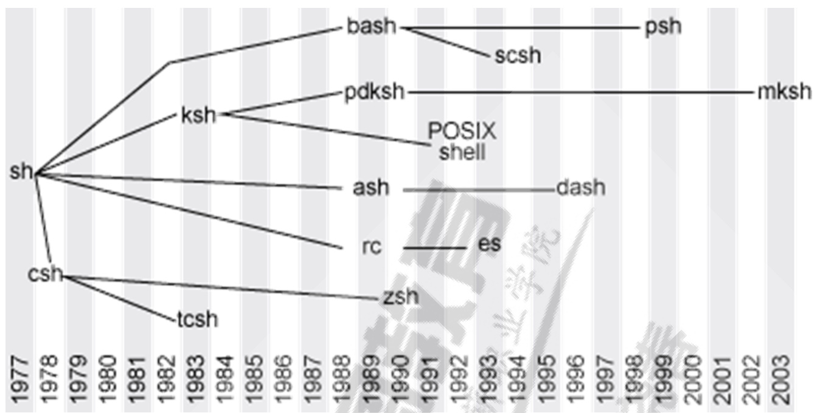
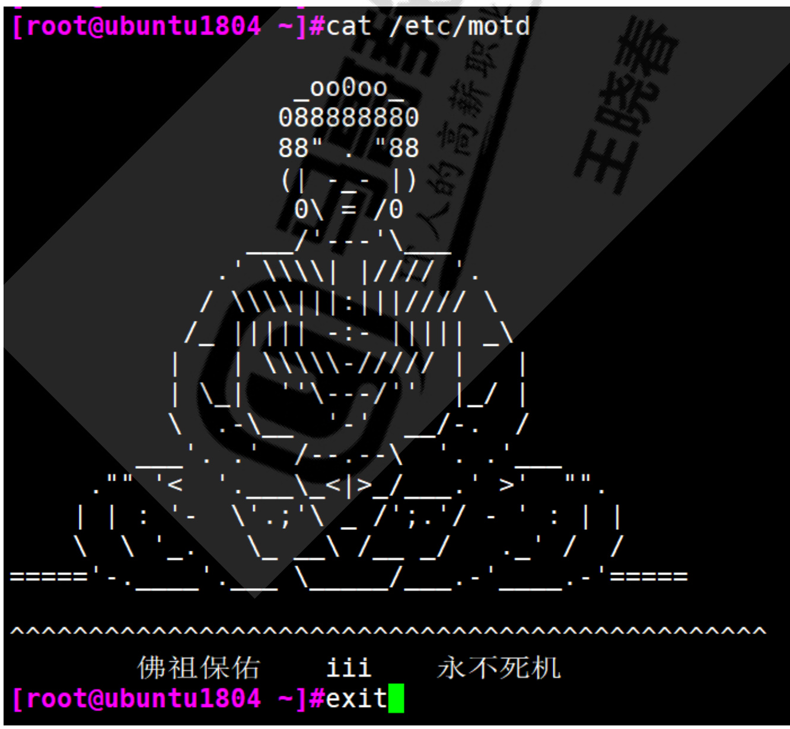
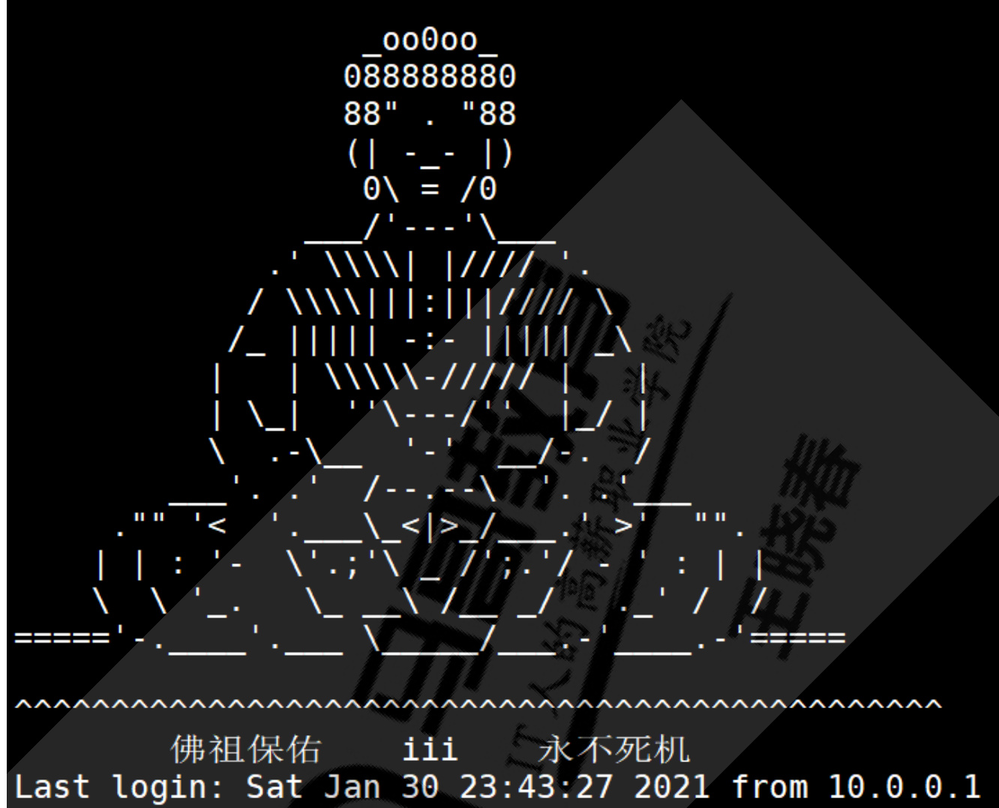
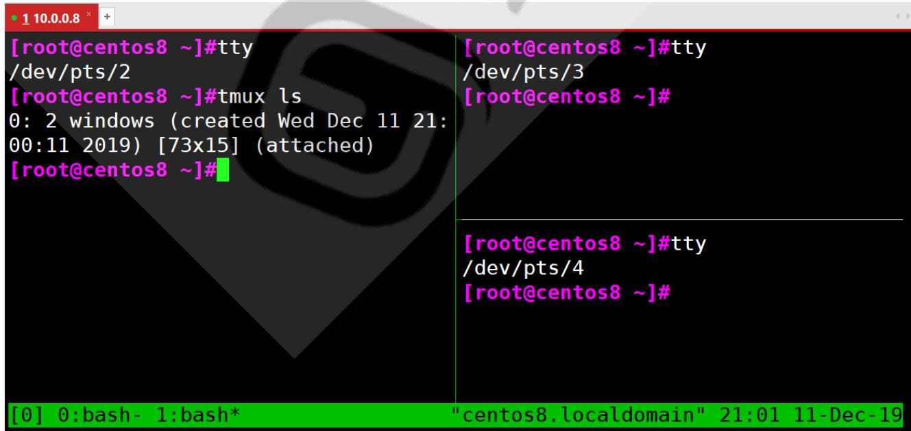
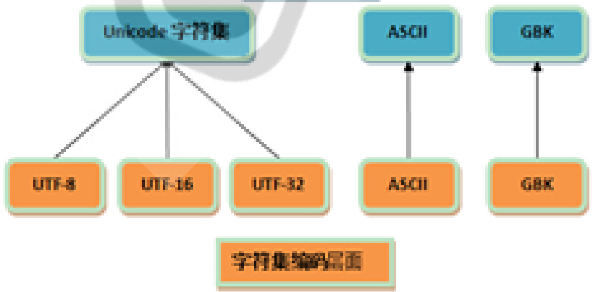
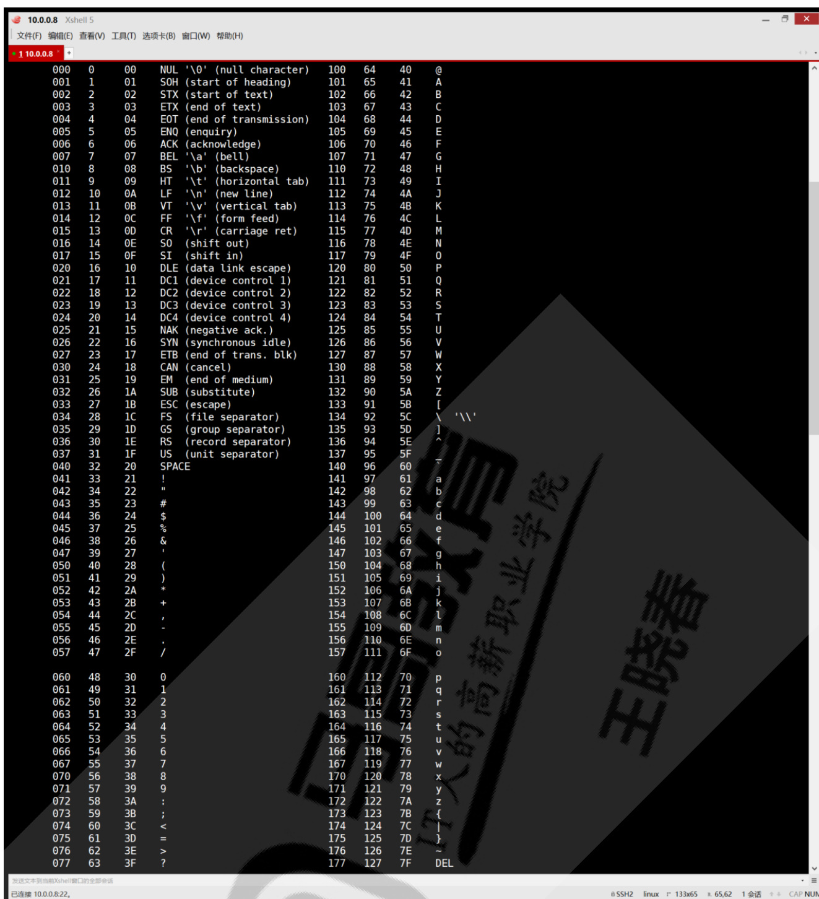
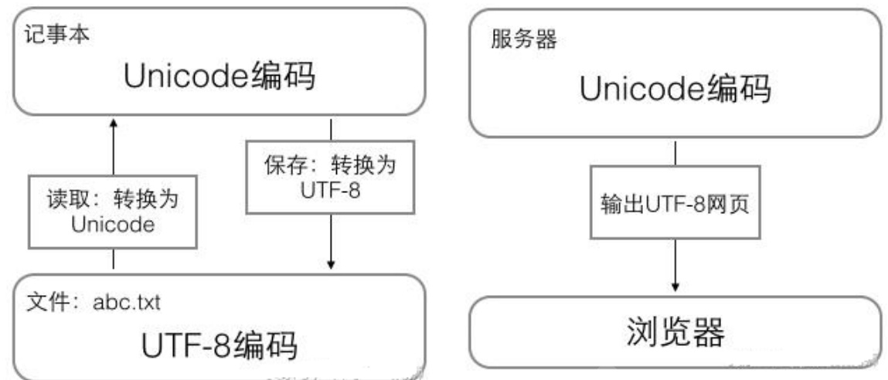
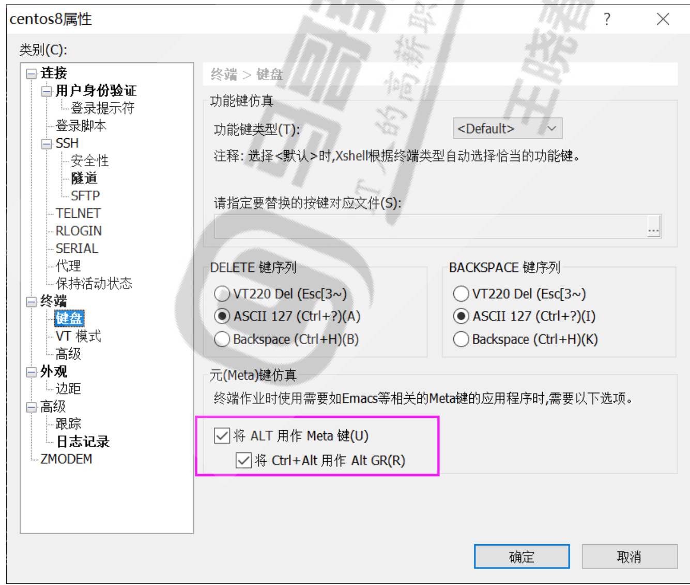

Linux基础入门¶
讲师：王晓春
Linux 基础入门¶
内容概述¶
1 Linux 基础¶
1.1 用户类型.2 终端 terminal1.2.1 终端类型1.2.2 查看当前的终端设备
1.3 交互式接口¶
1.3.1 交互式接口类型
1.3.2 什么是shell
1.3.3 各种Shell
1.3.4 bash shell
1.4 设置主机名¶
1.5 命令提示符 prompt
1.6 执行命令¶
1.6.1 执行命令过程
1.6.2 shell中可执行的两类命令1.6.2.1 内部命令相关1.6.2.2 执行外部命令
1.6.3 命令别名
1.6.4 命令格式
1.7 常见命令¶
1.7.1 查看硬件信息¶
1.7.1.1 查看 cpu1.7.1.2 查看内存大小1.7.1.3 查看硬盘和分区情况
1.7.2 查看系统版本信息1.7.2.1 查看系统架构1.7.2.2 查看内核版本1.7.2.3 查看操作系统发行版本
1.7.3 日期和时间
1.7.4 关机和重启
1.7.5 用户登录信息查看命令
1.7.6 文本编辑
1.7.7 会话管理1.7.7.1 screen
1.7.7.2 tmux1.7.8 输出信息 echo1.7.8.1 echo 基本用法1.7.8.2 echo 高级用法
1.8 字符集和编码¶
1.8.1 ASCII码
1.8.2 Unicode
1.9 命令行扩展和被括起来的集合¶
1.9.1 命令行扩展：`` 和 \$()1.9.2 括号扩展：{ }1.10 tab 键补全1.10.1 命令补全1.10.2 路径补全1.10.3 双击Tab键1.11 命令行历史1.12 调用命令行历史1.13 bash的快捷键
2 获得帮助¶
2.1 whatis
2.2 查看命令的帮助2.2.1 内部命令帮助2.2.2 外部命令及软件帮助
2.3 外部命令的--help 或 -h 选项
2.4 man 命令
2.5 info
2.6 命令自身提供的官方使用指南
2.7 系统及第三方应用官方文档2.7.1 通过在线文档获取帮助2.7.2 Linux官方在线文档和知识库2.7.3 红帽全球技术支持服务
2.8 相关网站和搜索¶
Linux 基础入门¶
内容概述¶
用户
终端
Shell介绍
执行命令
简单命令
Tab键补全命令行历史bash快捷键
帮助用法¶
1 Linux 基础¶
1.1 用户类型¶
root 用户一个特殊的管理帐户也被称为超级用户root已接近完整的系统控制对系统损害几乎有无限的能力除非必要,不要登录为 root
普通（ 非特权 ）用户权限有限造成损害的能力比较有限
1.2 终端 terminal¶

设备终端：键盘、鼠标、显示器
1.2.1 终端类型¶
控制台终端： /dev/console串行终端：/dev/ttyS#虚拟终端：tty：teletypewriters， /dev/tty#，tty 可有n个，Ctrl+Alt+F#图形终端：startx, xwindowsC $\mathsf{\bar{e n t O S}6:C t r l+A l t+F7}$ CentOS 7: 在哪个终端启动，即位于哪个虚拟终端伪终端：pty：pseudo-tty ， /dev/pts/# 如：SSH远程连接
1.2.2 查看当前的终端设备¶
tty 命令可以查看当前所在终端¶
范例：¶
[root@centos8 ~]#tty /dev/pts/0
1.3 交互式接口¶
交互式接口：启动终端后，在终端设备附加一个交互式应用程序
1.3.1 交互式接口类型¶
GUI：Graphic User Interface X protocol, window manager, desktop Desktop: GNOME (C, 图形库gtk)， KDE $C{+}{+}.$ ,图形库qt) XFCE (轻量级桌面) CLI：Command Line Interface shell程序
1.3.2 什么是shell¶

Shell 是Linux系统的用户界面，提供了用户与内核进行交互操作的一种接口。它接收用户输入的命令并把它送入内核去执行
shell也被称为LINUX的命令解释器（command interpreter），Shell 本身是一个程序。将用户输入的命令行拆解为”命令名“与”参数“。接着，根据命令名找到对应要执行的程序，对被执行的程序进行初始化，然后将刚才解析出来的参数传给该程序并执行
shell是一种高级程序设计语言，提供了变量，函数，条件判断，循环等开发语言的功能
由于Shell本身是个程序，所以它可以被任何用户自己开发的各种Shell所代替
1.3.3 各种Shell¶

sh：Steve Bourne
bash：Bourne-Again Shell，GPL，CentOS 和 Ubuntu 默认使用
csh：c shell , C 语言风格
tcsh
ksh ：Korn Shell, AIX 默认 shell
zsh： MacOS默认shell
1.3.4 bash shell¶
GNU Bourne-Again Shell(bash)是GNU计划中重要的工具软件之一，目前也是 Linux标准的shell，与sh兼容
显示当前使用的shell
echo \${SHELL}¶
显示当前系统使用的所有shell
cat /etc/shells
1.4 设置主机名¶
#临时生效¶
hostname NAME
持久生效,支持CentOS7和Ubuntu18.04以上版本hostnamectl set-hostname NAME¶
范例¶
[root@centos8 ~]#hostname bj-yz-k8s-node1-100-10.magedu.local
注意：¶
主机名不支持使用下划线，但支持横线，可使用字母，横线或数字组合有些软件对主机名有特殊要求
范例：
[root@centos8 ~]#hostnamectl set-hostname centos8.1
[root@centos8 ~]#systemctl restart postfix
Job for postfix.service failed because the control process exited with error code.
See "systemctl status postfix.service" and "journalctl -xe" for details.
1.5 命令提示符 prompt¶
登录Linux后，默认的系统命令提示符毫无没有个性，无法明显辨别生产和测试环境，而导致误操作。可以通过修改PS1变量实现个性的提示符格式，避免这种低级错误
范例：默认的提示符
CentOS默认提示符 [root@localhost ~]#¶
Ubuntu默认提示符 root@ubuntu1804:~#¶
管理员$\$1$ 普通用户¶
显示提示符格式¶
[root@centos8 ~]#echo \$PS1 [\e[1;35m][\u@\h \W]\$[\e[0m]
修改提示符格式范例¶
PS1="[\e[1;5;41;33m][\u@\h \W]\\$[\e[0m]"
PS1 $\c=$ "[\e[1;32m][\t [\e[1;33m]\u[\e[35m]@\h[\e[1;31m] \W[\e[1;32m]]
[\e[0m]\\$"
提示符格式说明：¶
\e 控制符\033
\u 当前用户
\h 主机名简称\H 主机名\w 当前工作目录\W 当前工作目录基名\t 24小时时间格式
\T 12小时时间格式! 命令历史数# 开机后命令历史数范例：在CentOS系统实现持久保存提示符格式
[root@centos8 ~]# echo 'PS1 $=$ "[\e[1;32m][\t [\e[1;33m]\u[\e[35m]@\h [\e[1;31m] \W[\e[1;32m]][\e[0m]\\$"' $>$ /etc/profile.d/env.sh
[root@centos8 ~]#cat /etc/profile.d/env.sh
PS1="[\e[1;32m][\t [\e[1;33m]\u[\e[35m]@\h[\e[1;31m] \W[\e[1;32m]] [\e[0m]\\$"
[root@centos8 ~]# exit
logout
Connection closed by foreign host.
Disconnected from remote host(centos8) at 15:28:38.
Type `help' to learn how to use Xshell prompt.
$[c:\backslash\sim]\$1$
Reconnecting in 1 seconds. Press any key to exit local shell
Connecting to 10.0.0.100:22..
Connection established.
To escape to local shell, press 'Ctrl+Alt+]'
Activate the web console with: systemctl enable --now cockpit.socket
Last login: Wed Dec 11 15:28:34 2019 from 10.0.0.1
[15:28:40 root@centos8 ~]#
外部命令：在文件系统路径下有对应的可执行程序文件,当执行命令时才从磁盘加载至内存中,执行完毕后从内存中删除
区别指定的命令是内部或外部命令¶
type COMMAND
范例: 查看是否存在对应内部和外部命令
[root@centos8 ~]#type -a echo echo is a shell builtin echo is /usr/bin/echo
1.6.2.1 内部命令相关¶
help 内部命令列表enable 管理内部命令
enable cmd 启用内部命令enable –n cmd 禁用内部命令enable –n 查看所有禁用的内部命令
1.6.2.2 执行外部命令¶
查看外部命令路径：
which -a |--skip-alias whereis
Hash缓存表¶
系统初始hash表为空，当外部命令执行时，默认会从PATH路径下寻找该命令，找到后会将这条命令的路径记录到hash表中，当再次使用该命令时，shell解释器首先会查看hash表，存在将执行之，如果不存在，将会去PATH路径下寻找，利用hash缓存表可大大提高命令的调用速率
hash 命令常见用法
hash 显示hash缓存
hash -l 显示hash缓存，可作为输入使用
hash -p path name 将命令全路径path起别名为name
hash -t name 打印缓存中name的路径
hash -d name 清除name缓存
hash -r 清除缓存
1.6.3 命令别名¶
对于经常执行的较长的命令，可以将其定义成较短的别名，以方便执行显示当前shell进程所有可用的命令别名
alias
定义别名NAME，其相当于执行命令VALUEalias NAME $\overset{\cdot}{\underset{\cdot}{=}}$ 'VALUE'范例: 扫描新加的磁盘
[root@centos8 ~]#alias scandisk $\c=$ 'echo - >
/sys/class/scsi_host/host0/scan;echo -
/sys/class/scsi_host/host1/scan;echo - - $>$ /sys/class/scsi_host/host2/scan'
范例: 持久保存别名 撤消别名：unalias unalias [-a] name [name ...] unalias -a #取消所有别名
注意：在命令行中定义的别名，仅对当前shell进程有效如果想永久有效，要定义在配置文件中仅对当前用户：~/.bashrc对所有用户有效：/etc/bashrc编辑配置给出的新配置不会立即生效，bash进程重新读取配置文件
source /path/to/config_file /path/to/config_file
如果别名同原命令同名，如果要执行原命令，可使用
\ALIASNAME
“ALIASNAME”
‘ALIASNAME’
command ALIASNAME
/path/commmand #只适用于外部命令
1.6.4 命令格式¶
COMMAND [OPTIONS...] [ARGUMENTS...] COMMAND [COMMAND] [COMMAND]
选项：用于启用或关闭命令的某个或某些功能短选项：UNIX 风格选项，-c 例如：-l, -h长选项：GNU风格选项，--word 例如：--all, --humanBSD风格选项： 一个字母，例如：a，使用相对较少
参数：命令的作用对象，比如:文件名，用户名等
范例:
[root@centos8 ~]#id -u wang 1000 [root@centos8 ~]#ls -a [root@centos8 ~]#ls --all [root@centos8 ~]#free -h [root@centos8 ~]#free --human [root@centos8 ~]#ps a
注意：¶
多个选项以及多参数和命令之间使用空白字符分隔取消和结束命令执行：Ctrl $+\mathsf{c}$ ，Ctrl+d
多个命令可以用 ";" 符号分开
一个命令可以用\分成多行
1.7 常见命令¶
1.7.1 查看硬件信息¶
1.7.1.1 查看 cpu¶
lscpu命令可以查看cpu信息cat /proc/cpuinfo也可看查看到
范例：¶
[root@centos8 ~]# lscpu
Architecture: $\times86_64$
CPU op-mode(s): 32-bit, 64-bit
Byte Order: Little Endian
CPU(s): 8
On-line CPU(s) list: 0-7
Thread(s) per core: 1 #每个core 有几个线程
Core(s) per socket: 4 #每个槽位有4个core
Socket(s): 2 #服务器面板上有2个cpu 槽位
NUMA node(s): 2 #nodes的数量
Vendor ID: GenuineIntel
CPU family: 6
Model: 44
Stepping: 2
CPU MHz: 2128.025
BogoMIPS: 4256.03
Virtualization: VT-x
L1d cache: 32K
L1i cache: 32K
L2 cache: 256K
L3 cache: 8192K
NUMA node0 CPU(s): 0,2,4,6 #对应的core
NUMA node1 CPU(s): 1,3,5,7
[root@centos8 ~]# cat /proc/cpuinfo
1.7.1.2 查看内存大小¶
[root@centos8 ~]#free total use Mem: 816188 15688 Swap: 2097148 [root@centos8 ~]#cat /proc/mem MemTotal: 816188 kB MemFree: 412780 kB MemAvailable: 527144 kB Buffers: 5304 kB Cached: 208252 kB SwapCached: 0 kB Active: 138976 kB Inactive: 127508 kB Active(anon): 53348 kB Inactive(anon): 5368 kB Active(file): 85628 kB Inactive(file): 122140 kB Unevictable: 0 kB Mlocked: 0 kB SwapTotal: 2097148 kB SwapFree: 2097148 kB Dirty: 0 kB Writeback: 0 kB AnonPages: 52964 kB Mapped: 78456 kB Shmem: 5792 kB KReclaimable: 33084 kB Slab: 69144 kB SReclaimable: 33084 kB SUnreclaim: 36060 kB KernelStack: 4428 kB PageTables: 5888 kB NFS_Unstable: 0 kB Bounce: 0 kB WritebackTmp: 0 kB CommitLimit: 2505240 kB Committed_AS: 250040 kB VmallocTotal: 34359738367 kB VmallocUsed: 0 kB VmallocChunk: 0 kB HardwareCorrupted: 0 kB AnonHugePages: 6144 kB ShmemHugePages: 0 kB ShmemPmdMapped: 0 kB HugePages_Total: 0 HugePages_Free: 0 HugePages_Rsvd: 0 HugePages_Surp: 0 Hugepagesize: 2048 kB Hugetlb: 0 kB DirectMap4k: 108416 kB DirectMap2M: 940032 kB DirectMap1G: 0 kB [root@centos8 ~]#
1.7.1.3 查看硬盘和分区情况¶
[root@centos8 ~]#lsblk
NAME MAJ:MIN RM SIZE RO TYPE MOUNTPOINT
sda 8:0 0 200G 0 disk
├─sda1 8:1 0 1G 0 part /boot
├─sda2 8:2 0 100G 0 part /
├─sda3 8:3 0 50G 0 part /data
├─sda4 8:4 0 1K 0 part
└─sda5 8:5 0 2G 0 part [SWAP]
sr0 11:0 1 7G 0 rom
[root@centos8 ~]#cat /proc/partitions
major minor #blocks name
8 0 209715200 sda
8 1 1048576 sda1
8 2 104857600 sda2
8 3 52428800 sda3
8 4 1 sda4
8 5 2097152 sda5
11 0 7377920 sr0
1.7.2 查看系统版本信息¶
1.7.2.1 查看系统架构¶
root@ubuntu2004:~# arch
x86_64
[root@centos8 ~]# arch
x86_64
[root@rhel5 ~]# arch
i686
1.7.2.2 查看内核版本¶
[root@centos8 ~]#uname 4.18.0-147.el8.x86_64
[root@centos7 ~]#uname -r 3.10.0-1062.el7.x86_64
[root@centos6 ~]# uname -r 2.6.32-754.el6.x86_64
[root@ubuntu1804 ~]#uname -r 4.15.0-29-generic
1.7.2.3 查看操作系统发行版本¶
CentOS8 查看发行版本 [root@centos8 ~]#cat /etc/redhat-release CentOS Linux release 8.1.1911 (Core) [root@centos8 ~]#cat /etc/os-release¶
NAME $\c=$ "CentOS Linux"
VERSION="8 (Core)"
ID="centos"
ID_LIKE $\c=$ "rhel fedora"
VERSION_ID $\vDash$ "8"
PLATFORM_ID $\vDash$ "platform:el8"
PRETTY_NAME $\c=$ "CentOS Linux 8 (Core)"
ANSI_COLOR $\c=$ "0;31"
CPE_NAME $\c=$ "cpe:/o:centos:centos:8"
HOME_URL $\v{x}=$ "https://www.centos.org/"
BUG_REPORT_URL $\c=$ "https://bugs.centos.org/"
CENTOS_MANTISBT_PROJECT $\mathbf{\dot{\eta}}=\mathbf{\eta}$ "CentOS-8" CENTOS_MANTISBT_PROJECT_VERSION="8" REDHAT_SUPPORT_PRODUCT $\mathbf{\dot{\eta}}=\mathbf{\eta}$ "centos" REDHAT_SUPPORT_PRODUCT_VERSION="8"
[root@centos8 ~]#lsb_release -a
LSB Version: :core-4.1-amd64:core-4.1-noarch
Distributor ID: CentOS
Description: CentOS Linux release 8.1.1911 (Core)
Release: 8.1.1911
Codename: Core
[root@centos8 ~]#
#ubuntu查看发行版本¶
[root@ubuntu1804 ~]#cat /etc/os-release
NAME $\c=$ "Ubuntu"
VERSION $\vDash$ "18.04.1 LTS (Bionic Beaver)
ID $\vDash$ ubuntu
ID_LIKE $\c=$ debian
PRETTY_NAME $\c=$ "Ubuntu 18.04.1 LTS"
VERSION_ID $\vDash$ "18.04"
HOME_URL $\c=$ "https://www.ubuntu.com/"
SUPPORT_URL $\c=$ "https://help.ubuntu.com/"
BUG_REPORT_URL $\c=$ "https://bugs.launchpad.net/ubuntu/"
PRIVACY_POLICY_URL="https://www.ubuntu.com/legal/terms-and-policies/privacy
policy"
VERSION_CODENAME=bionic
UBUNTU_CODENAME=bionic
[root@ubuntu1804 ~]#cat /etc/issue Ubuntu 18.04.1 LTS \n \l
[root@ubuntu1804 ~]#lsb_release -a No LSB modules are available.
Distributor ID: Ubuntu
Description: Ubuntu 18.04.1 LTS Release: 18.04
Codename: bionic
[root@ubuntu1804 ~]#
范例: 查看 OS 版本
CentOS
[root@centos8 ~]#lsb_release -cs
Core
[root@centos8 ~]#lsb_release -rs
8.2.2004
[root@centos7 ~]#lsb_release -is
CentOS
[root@centos7 ~]#lsb_release -cs
Core
[root@centos7 ~]#lsb_release -rs
7.9.2009
[root@centos6 ~]#lsb_release -is
CentOS
[root@centos6 ~]#lsb_release -cs
Final
[root@centos6 ~]#lsb_release -rs
6.10
root@ubuntu2004:~# lsb_release -is
Ubuntu
root@ubuntu2004:~# lsb_release -cs
focal
root@ubuntu2004:~# lsb_release -rs
20.04
[root@ubuntu1804 ~]#lsb_release -is
Ubuntu
[root@ubuntu1804 ~]#lsb_release -cs
bionic
[root@ubuntu1804 ~]#lsb_release -rs
18.04
1.7.3 日期和时间¶
Linux的两种时钟
系统时钟：由Linux内核通过CPU的工作频率进行的硬件时钟：主板
相关命令¶
date 显示和设置系统时间范例：
[root@centos8 ~]#date +%s 1584689051 [root@centos8 ~]#date -d @`date +%s Fri Mar 20 15:24:18 CST 2020
[root@centos8 ~]#date -d @1584689051
Fri Mar 20 15:24:11 CST 2020
[root@centos8 ~]#date -d @1584689051 +%F_%T 2020-03-20_15:24:11
[root@ubuntu ~]#date -d "2020-02-02" +%s 1580572800
clock，hwclock: 显示硬件时钟-s, --hctosys #以硬件时钟为准，校正系统时钟-w, --systohc #以系统时钟为准，校正硬件时钟
范例:
[root@centos8 ~]#ll /usr/sbin/clock lrwxrwxrwx. 1 root root 7 Apr 24 2020 /usr/sbin/clock -> hwclock
时区：
/etc/localtime
范例:
[root@centos8 ~]#timedatectl list-timezones
[root@centos8 ~]#timedatectl set-timezone Asia/Shanghai
[root@centos8 ~]#timedatectl status Local time: Mon 2020-07-27 17:20:56 CST Universal time: Mon 2020-07-27 09:20:56 UTC RTC time: Mon 2020-07-27 09:20:56 Time zone: Asia/Shanghai (CST, $+0800\dot{}$ )
System clock synchronized: yes NTP service: active RTC in local TZ: no
[root@centos8 ~]#ll /etc/localtime
lrwxrwxrwx. 1 root root 35 Dec 11 11:19 /etc/localtime ->
../usr/share/zoneinfo/Asia/Shanghai
root@ubuntu1804:~# cat /etc/timezone Asia/Shanghai
显示日历：
cal –y
范例:¶
[16:47:36 root@centos8 ~]#cal 9 1752 September 1752
Su Mo Tu We Th Fr Sa 1 2 14 15 16
17 18 19 20 21 22 23
24 25 26 27 28 29 30
1.7.4 关机和重启¶
关机：
halt poweroff
重启：
reboot
-f: 强制，不调用shutdown
-p: 切断电源
关机或重启：shutdown shutdown [OPTION]. [TIME] [MESSAGE]
-r: reboot
-h: halt
-c：cancel
TIME：无指定，默认相当于 $^{\cdot+1}$ （CentOS7）now: 立刻,相当于 $^{\cdot+0}$ +#: 相对时间表示法，几分钟之后；例如 $+3$ hh:mm: 绝对时间表示，指明具体时间
1.7.5 用户登录信息查看命令¶
whoami: 显示当前登录有效用户who: 系统当前所有的登录会话w: 系统当前所有的登录会话及所做的操作
1.7.6 文本编辑¶
nano 工具可以实现文本的编辑，上手容易，适合初学者gedit 工具是图形工具
范例: 创建登录提示文件 /etc/motd参考网站: https://www.bootschool.net/ascii-art
[root@ubuntu1804 ~]#cat /etc/motd

91 updates are security updates.
New release '20.04.1 LTs' available.
Run 'do-release-upgrade' to upgrade to it.

1.7.7 会话管理¶
命令行的典型使用方式是，打开一个终端窗口（terminal window，以下简称"窗口"），在里面输入命令。用户与计算机的这种临时的交互，称为一次"会话"（session）
会话的一个重要特点是，窗口与其中启动的进程是连在一起的。打开窗口，会话开始；关闭窗口，会话结束，会话内部的进程也会随之终止，不管有没有运行完
一个典型的例子就是，SSH 登录远程计算机，打开一个远程窗口执行命令。这时，网络突然断线，再次登录的时候，是找不回上一次执行的命令的。因为上一次 SSH 会话已经终止了，里面的进程也随之消失了。为了解决这个问题，会话与窗口可以"解绑"：窗口关闭时，会话并不终止，而是继续运行，等到以后需要的时候，再让会话"绑定"其他窗口
终端复用器软件就是会话与窗口的"解绑"工具，将它们彻底分离。
（1）它允许在单个窗口中，同时访问多个会话。这对于同时运行多个命令行程序很有用。
（2） 它可以让新窗口"接入"已经存在的会话。
（3）它允许每个会话有多个连接窗口，因此可以多人实时共享会话。
（4）它还支持窗口任意的垂直和水平拆分。
类似的终端复用器还有Screen，Tmux
1.7.7.1 screen¶
利用screen 可以实现会话管理,如：新建会话,共享会话等注意：CentOS7 来自于base源，CentOS8 来自于epel源
范例：安装 screen
CentOS7 安装screen [root@centos7 ~]#yum -y install screen #CentOS8 安装screen [root@centos8 ~]#dnf -y install epel-release [root@centos8 ~]#dnf -y install screen¶
screen命令常见用法：
创建新screen会话screen –S [SESSION]
加入screen会话screen $-x$ [SESSION]
退出并关闭screen会话exit
剥离当前screen会话$\mathsf{C}\mathsf{t r}|+\mathsf{a},\mathsf{d}$ 显示所有已经打开的screen会话screen -ls
恢复某screen会话screen -r [SESSION]
1.7.7.2 tmux¶

Tmux 是一个终端复用器（terminal multiplexer），类似 screen，但是更易用，也更强大
Tmux 就是会话与窗口的"解绑"工具，将它们彻底分离，功能如下
它允许在单个窗口中，同时访问多个会话。这对于同时运行多个命令行程序很有用。它可以让新窗口"接入"已经存在的会话。
它允许每个会话有多个连接窗口，因此可以多人实时共享会话。
它还支持窗口任意的垂直和水平拆分
安装¶
yum install tmux
启动与退出¶
[root@centos8 ~]#tmux [root@centos8 ~]#exit logout
mux 窗口有大量的快捷键。所有快捷键都要通过前缀键唤起。默认的前缀键是 $c(r]+b$ ，即先按下Ctrl+b ，快捷键才会生效。帮助命令的快捷键是Ctrl $+\mathsf{b}$ ? 然后，按下q 键，就可以退出帮助
新建会话¶
第一个启动的 Tmux 窗口，编号是0，第二个窗口的编号是1，以此类推。这些窗口对应的会话，就是 0号会话、1 号会话。使用编号区分会话，不太直观，更好的方法是为会话起名。下面命令新建一个指定名称的会话。
tmux new -s
tmux ls或Ctr $|+|_{0,5}$ 可以查看当前所有的 Tmux 会话
tmux ls tmux list-session
分离会话¶
在 Tmux 窗口中，按下 $c_{ Ḋ }\mathrm{tr}|+\mathrm{b}_{ Ḋ }$ d或者输入tmux detach命令，就会将当前会话与窗口分离。
tmux detach
接入会话tmux attach 命令用于重新接入某个已存在的会话。
tmux attach -t
范例：
可以将窗口分成多个窗格（pane），每个窗格运行不同的命令
上下分窗格¶
tmux split-window ctrl $+\mathsf{b}$ ,"
左右分窗格¶
tmux split-window -h ctrl+b,%
窗格快捷键¶
Ctrl+b %：划分左右两个窗格
Ctrl $+6$ "：划分上下两个窗格
Ctrl $+6$
Ctrl $+6$ ;：光标切换到上一个窗格
Ctrl $+6$ o：光标切换到下一个窗格。
Ctrl $+6$ $+\mathsf{b}$ {}：当前窗格左右移
Ctrl $+6$ Ctrl $+0$ ：当前窗格上移
Ctrl $+6$ Al $t+0$ ：当前窗格下移
Ctrl $+6$ x：关闭当前窗格
Ctrl $+6$ !：将当前窗格拆分为一个独立窗口
Ctrl $+6$ z：当前窗格全屏显示，再使用一次会变回原来大小
Ctrl $+\mathsf{b}$ Ctrl $^+$
Ctrl $+6$ q：显示窗格编号
窗口管理
除了将一个窗口划分成多个窗格，Tmux 也允许新建多个窗口新建窗口tmux new-window命令用来创建新窗口
tmux new-window
新建一个指定名称的窗口¶
tmux new-window -n
切换窗口
tmux select-window命令用来切换窗口
切换到指定编号的窗口
tmux select-window -t
切换到指定名称的窗口
tmux select-window -t
窗口快捷键¶
Ctrl $+6$ c：创建一个新窗口，状态栏会显示多个窗口的信息。
Ctrl $+6$ p：切换到上一个窗口（按照状态栏上的顺序）。
Ctrl $+6$ n：切换到下一个窗口。
Ctrl $+6$
Ctrl $+6$ ,：窗口重命名
列出所有快捷键，及其对应的 Tmux 命令
tmux list-keys列出所有 Tmux 命令及其参数tmux list-commands
1.7.8 输出信息 echo¶
1.7.8.1 echo 基本用法¶
echo 命令可以将后面跟的字符进行输出
功能：显示字符，echo会将输入的字符串送往标准输出。输出的字符串间以空白字符隔开, 并在最后加
上换行号
语法：
echo [-neE][字符串]¶
选项：
-E （默认）不支持 解释功能-n 不自动换行-e 启用 字符的解释功能
显示变量
echo "\$VAR_NAME” #用变量值替换，弱引用echo '\$VAR_NAME’ #变量不会替换，强引用启用命令选项-e，若字符串中出现以下字符，则特别加以处理，而不会将它当成一般文字输出
\a 发出警告声\b 退格键\c 最后不加上换行符号\e escape，相当于\033\n 换行且光标移至行首$v$ 回车，即光标移至行首，但不换行\t 插入tab
\ 插入\字符\0nnn 插入nnn（八进制）所代表的ASCII字符\xHH插入HH（十六进制）所代表的ASCII数字（man 7 ascii）
范例：
[root@centos8 ~]#echo -e 'a\x0Ab'
a
b
[root@centos8 ~]#echo -e '\033[43;31;1;5mmagedu\e[0m'
magedu
[root@centos8 ~]#echo -e '\x57\x41\x4E\x47'
WANG
[root@centos8 ~]#echo \$PATH
\$PATH
[root@centos8 ~]#echo
[root@centos8 ~]#echo \
[root@centos8 ~]#echo \
[root@centos8 ~]#echo \\
\
[root@centos8 ~]#echo "\$PATH"
/usr/local/sbin:/usr/local/bin:/usr/sbin:/usr/bin:/root/bin
[\$rPoAoTtH@centos8 ~]#echo '\$PATH'
1.7.8.2 echo 高级用法¶
在终端中，ANSI定义了用于屏幕显示的Escape屏幕控制码具有颜色的字符，其格式如下:
"\033[字符背景颜色;字体颜色m字符串\033[0m"
\033[30m -- \033[37m 设置前景色\033[40m -- \033[47m 设置背景色
字符背景颜色范围: 40--47¶
40:黑
41:红
42:绿
43:黄
44:蓝
45:紫
46:深绿
47:白色
字体颜色: 30--37¶
30: 黑
31: 红
32: 绿
33: 黄
34: 蓝
35: 紫
36: 深绿
37: 白色
加颜色只是以下控制码中的一种，下面是常见的一些ANSI控制码：
| \033[0m | 关闭所有属性 |
| \033[1m | 设置高亮度 |
| \033[4m | 下划线 |
| \033[5m | 闪烁 |
| \033[7m | 反显 |
| \033[8m | 消隐 |
| \033[nA | 光标上移n行 |
| \033[nB | 光标下移n行 |
| \033[nC | 光标右移n列 |
| \033[nD | 光标左移n列 |
| \033[×;yH | 设置光标位置x行y列 |
| \033[2] | 清屏 |
| \033[K | 清除从光标到行尾的内容 |
| \033[s | 育 保存光标位置 |
| \033[u | 恢复光标位置 |
| \033[?25] | 隐藏光标 |
| \033[?25h | 显示光标 |
| \033[2]\033[0;OH | 清屏且将光标置顶 |
1.8 字符集和编码¶
许多场合下，字符集与编码这两个概念常被混为一谈，但两者是有差别的。字符集与字符集编码是两个不同层面的概念
charset是character set的简写，即字符集，即二进制和字符的对应关系，不关注最终的存储形式encoding是charset encoding的简写，即字符集编码，简称编码，实现如何将字符转化为实际的二进制进行存储或相反，编码决定了空间的使用的大小

学H在O
1.8.1 ASCII码¶
计算机内部，所有信息最终都是一个二进制值。上个世纪60年代，美国制定了一套字符编码，对英语字符与二进制位之间的关系，做了统一规定，即ASCII（American Standard Code for InformationInterchange） 码
ASCII 码一共规定了128个字符的编码，占用了一个字节的后面7位，最前面的一位统一规定为 0
| Decinal Hexadecimal Binary Octal Char | Decinal Hexadecimal Binary | Octal Char | Decimal Hexadecimal Binary | Octal Char | ||||||||||
| 0 | 0 | 0 | [NULL] | 48 | 30 | 110000 60 | 96 | 60 | 1100000140 | |||||
| 1 | i | [STARTOFHEADING] | 49 | 31 | 110001 | 61 | 97 | 61 | 1100001141 | a | ||||
| 2 | HN | 10 | NM | [STARTOFTEXT] | 50 | 32 | 110010 | 62 | 98 | 62 | 1100010142 | b | ||
| 3 | 3 | 11 | [END OFTEXT] | 51 | 33 | 110011 | 63 | 0123 | 99 | 63 | 1100011143 | |||
| 4 | 4 | 100 | 4 | [END OF TRANSMISSION] | 52 | 34 | 110100 | 64 | 4 | 100 | 64 | 1100100144 | d | |
| 5 | 5 | 101 | [ENQUIRY] | 53 | 35 | 110101 | 65 | 5 | 101 | 65 | 1100101145 | |||
| 6 | 6 | 110 | 6 | [ACKNOWLEDGE] | 54 | 36 | 110110 | 66 | 670 | 102 | 66 | 1100110146 | f | |
| 7 | 7 | 111 | 7 | [BELL] | 55 | 37 | 110111 | 67 | 103 | 67 | 1100111147 | g | ||
| 8 | 8 | 1000 | 10 | [BACKSPACE] | 56 | 38 | 111000 | 70 | 8 | 104 | 68 | 1101000150 | h | |
| 9 | 9 | 1001 | 11 | [HORIZONTALTAB] | 57 | 39 | 111001 | 71 | 9 | 105 | 69 | 1101001151 | i | |
| 10 | A | 1010 | 12 | [LINEFEED] | 58 | 3A | 111010 | 72 | ： | 106 | 6A | 1101010152 | ||
| 11 | B | 1011 | 13 | [VERTICALTAB] | 59 | 3B | 111011 | 73 | 107 | 6B | 1101011153 | k | ||
| 12 | C | 1100 | 14 | [FORMFEED] | 60 | 3C | 111100 | 74 | 108 | 6C | 1101100154 | ！ | ||
| 13 | D | 1101 | 15 | [CARRIAGERETURN] | 61 | 3D | 111101 | 75 | 109 | 6D | 1101101155 | m | ||
| 14 | 1110 | 16 | [SHIFTOUT] | 62 | 3 | 111110 76 | > | 110 | 6E | 1101110156 | n | |||
| 15 | EF | 1111 | 17 | [SHIFTIN] | 63 | 3F | 111111 | 77 | ？ | 111 | 6F | 1101111157 | ||
| 16 | 10 | 10000 | 20 | [DATA LINK ESCAPE] | 64 | 40 | 1000000100 | ? | 112 | 70 | 1110000160 | P | ||
| 17 | 11 | 10001 | 21 | [DEVICECONTROL1] | 65 | 41 | 1000001101 | A | 113 | 71 | 1110001161 | |||
| 18 | 12 | 10010 | 22 | [DEVICECONTROL2] | 66 | 42 | 1000010102 | B | 114 | 72 | 1110010162 | r | ||
| 19 | 13 | 10011 | 23 | [DEVICECONTROL3] | 67 | 43 | 1000011103 | 115 | 73 | 1110011163 | ||||
| 20 | 14 | 10100 | 24 | [DEVICECONTROL4] | 68 | 44 | 1000100104 | D | 116 | 74 | 1110100164 | t | ||
| 21 | 15 | 10101 | 25 | [NEGATIVEACKNOWLEDGE] | 69 | 45 | 1000101105 | 117 | 75 | 1110101165 | u | |||
| 22 | 16 | 10110 | 26 | [SYNCHRONOUSIDLE] | 70 | 46 | 1000110106 | F | 118 | 76 | 1110110166 | |||
| 23 | 17 | 10111 | 27 | [ENG OF TRANS.BLOCK] | 71 | 47 | 1000111107 | G | 119 | 77 | 1110111167 | w | ||
| 24 | 18 | 11000 | 30 | [CANCEL] | 72 | 48 | 1001000110 | H | 120 | 78 | 1111000170 | x | ||
| 25 | 19 | 11001 | 31 | [END OFMEDUM] | 73 | 49 | 1001001111 | 121 | 79 | 1111001171 | ||||
| 26 | 1A | 11010 | 32 | [SUBSTITUTE] | 74 | 4A | 1001010112 | 122 | 7A | 1111010 172 | y | |||
| 27 | 18 | 11011 | 33 | [ESCAPE] [FILESEPARATORJ | 75 76 | 4B 4C | 1001011113 1001100114 | K | 123 124 | 78 元 | 1111011173 | 【 | ||
| 28 29 | 1C 1D | 11100 11101 | 34 35 |
范例：查看 ascii 表
[root@centos8 ~]#dnf -y install man-pages [root@centos8 ~]#man ascii

1.8.2 Unicode¶
由于计算机是美国人发明的，因此，最早只有127个字母被编码到计算机里，即ASCII编码，但是要处理中文显然一个字节是不够的，至少需要两个字节，而且还不能和ASCII编码冲突，所以，中国制定了GB2312编码，用来把中文编进去。
全世界有上百种语言，日本把日文编到Shift_JIS里，韩国把韩文编到Euc-kr里，各国有各国的标准，就会不可避免地出现冲突，结果就是，在多语言混合的文本中，显示出来会有乱码
为了表示世界上所有语言中的所有字符。每一个符号都给予一个独一无二的编码数字，Unicode 是一个很大的集合，现在的规模可以容纳100多万个符号。Unicode 仅仅只是一个字符集，规定了每个字符对应的二进制代码，至于这个二进制代码如何存储则没有规定
Unicode编码方案：¶
UTF-8：变长，1到4个字节UTF-16：变长，2或4个字节UTF-32：固定长度，4个字节

UTF-8 是目前互联网上使用最广泛的一种 Unicode 编码方式，可变长存储。使用 1 - 4 个字节表示一个字符，根据字符的不同变换长度。编码规则如下：
对于单个字节的字符，第一位设为 0，后面的 7 位对应这个字符的 Unicode 码。因此，对于英文中的 0- 127 号字符，与 ASCII 码完全相同。这意味着 ASCII 码的文档可用 UTF-8 编码打开对于需要使用 N 个字节来表示的字符（ $N>1$ ），第一个字节的前 N 位都设为 1，第 $N+1$ 位设为0，剩余的 N - 1 个字节的前两位都设位 10，剩下的二进制位则使用这个字符的 Unicode 码来填充
编码转换和查询参考链接：¶
https://home.unicode.org/
http://www.chi2ko.com/tool/CJK.htm
https://www.bejson.com/convert/unicode_chinese/
https://javawind.net/tools/native2ascii.jsp?action=transform
http://tool.oschina.net/encode
http://web.chacuo.net/charsetescape
Unicode和UTF-8
| Unicode符号范围(十六进制) | UTF-8编码方式二进制) |
| 0000 0000-0000 007F | 0xxxxxXx |
| 00000080-000007FF | 110xxxxx 10xxxxxx |
| 0000 0800-0000 FFFF | 1110xxxx 10xxxxxx 10xxxxxx |
| 0001 0000-0010 FFFF | 11110xxx 10xxxxxx 10xxxxxx 10xxxxxx |
范例：Unicode 转换为 UTF-8
“汉”的 Unicode 码 $0\times6\mathsf{C}49$ （110 110001 001001），需要三个字节存储，格式为： 1110xxxx10xxxxxx 10xxxxxx，从后向前依次填充对应格式中的 x，多出的 $\times$ 用 0 补，得出UTF-8 编码为11100110 10110001 10001001
“马”的 Unicode 码 $0\times9\mathsf{A6C}$ （1001 101001 101100），需要三个字节存储，格式为： 1110xxxx10xxxxxx 10xxxxxx，从后向前依次填充对应格式中的 x，多出的 $\times$ 用 0 补，得出UTF-8 编码为11101001 10101001 10101100
范例：修改LANG变量实现中文语言提示
[root@centos7 ~]#echo \$LANG
en_US.UTF-8
[root@centos7 ~]#magedu
-bash: magedu: command not found
[root@centos7 ~]#LANG $\c=$ zh_CN.UTF-8
[root@centos7 ~]#echo \$LANG
zh_CN.UTF-8
[root@centos7 ~]#magedu
-bash: magedu: 未找到命令
public static void main(String args[]）
{ Stringa="\u4f18\u79c0"; System.out.println(a);
}
1.9 命令行扩展和被括起来的集合¶
1.9.1 命令行扩展：`` 和 \$()¶
把一个命令的输出打印给另一个命令的参数,放在``中的一定是有输出信息的命令
\$(COMMAND) 或 `COMMAND
[root@centos8 ~]#echo "echo \$HOSTNAME" echo centos8.localdomain
[root@centos8 ~]#echo 'echo \$HOSTNAME' echo \$HOSTNAME
[root@centos8 ~]#echo `echo \$HOSTNAME` centos8.localdomain
#结论：¶
单引号：强引用,六亲不认，变量和命令都不识别，都当成了普通的字符串,"最傻"
双引号：弱引用,不能识别命令，可以识别变量,"半傻不精"
反向单引号：里面的内容必须是能执行的命令并且有输出信息,变量和命令都识别，并且会将反向单引号的内
容当成命令进行执行后，再交给调用反向单引号的命令继续,"最聪明"
范例：¶
[09:18:04 root@centos8 data]#echo "This system's name is \$(hostname)"
This system's name is centos8.magedu.org
[09:18:55 root@centos8 data]#echo "I am `whoami
I am root
[09:15:37 root@centos8 data]#touch \$(date +%F).log
[09:16:29 root@centos8 data]#ls
2019-12-13.log
[09:16:31 root@centos8 data]#ll
total 0
-rw-r--r--. 1 root root 0 Dec 13 09:16 2019-12-13.log
[09:16:34 root@centos8 data]#touch `date +%F`.txt
[09:17:14 root@centos8 data]#ll
total 0
-rw-r--r--. 1 root root 0 Dec 13 09:16 2019-12-13.log
-rw-r--r--. 1 root root 0 Dec 13 09:17 2019-12-13.txt
[09:17:15 root@centos8 data]#touch `hostname`-`date +%F`.log
[09:18:02 root@centos8 data]#ll
total 0
-rw-r--r--. 1 root root 0 Dec 13 09:16 2019-12-13.log
-rw-r--r--. 1 root root 0 Dec 13 09:17 2019-12-13.txt
-rw-r--r--. 1 root root 0 Dec 13 09:18 centos8.magedu.org-2019-12-13.log
[root@centos8 ~]#touch `date +%F_%H-%M-%S`.log [root@centos8 ~]#touch `date -d '-1 day' +%F`.log
范例： $\$($ 和
[root@centos8 ~]#ll `echo `date +%F`.txt -bash: .txt: command not found ls: cannot access 'date': No such file or directory ls: cannot access '+%F': No such file or directory [root@centos8 ~]#ll \$(echo \$(date +%F).txt) -rw-r--r-- 1 root root 0 Mar 20 09:55 2020-03-20.txt [root@centos8 ~]#ll `echo \$(date $+\%+$ ).txt` -rw-r--r-- 1 root root 0 Mar 20 09:55 2020-03-20.txt [root@centos8 ~]#ll \$(echo `date +%F`.txt) -rw-r--r-- 1 root root 0 Mar 20 09:55 2020-03-20.txt
1.9.2 括号扩展：{ }¶
{} 可以实现打印重复字符串的简化形式{元素1,元素2,元素3}{元素1..元素2}
范例：
echo file{1,3,5} 结果为：file1 file3 file5
rm -f file{1,3,5}
echo {1..10}
echo {a..z}
echo {1..10..2}
echo {000..20..2}
范例:¶
[root@centos8 ~]#echo {000..20..2}
000 002 004 006 008 010 012 014 016 018 020
[root@centos8 ~]#echo {a..z..2}
a c e g i k m o q s u w y
[root@centos8 ~]#echo {A..z}
A B C D E F G H I M N O P R S T U V W X b c d e f g h i
j k
范例: 关闭和启用{}的扩展功能
[root@centos8 ~]#echo \$-
himBHs
[root@centos8 ~]#echo {1..10}
1 2 3 4 5 6 7 8 9 10
[root@centos8 ~]#set +B
[root@centos8 ~]#echo \$-
himHs
[root@centos8 ~]#echo {1..10}
{1..10}
[root@centos8 ~]#set -B
[root@centos8 ~]#echo \$-
himBHs
[root@centos8 ~]#echo {1..10}
1 2 3 4 5 6 7 8 9 10
1.10 tab 键补全¶
tab 键可以实现命令及路径等补全，提高输入效率，避免出错
1.10.1 命令补全¶
内部命令：
外部命令：bash根据PATH环境变量定义的路径，自左而右在每个路径搜寻以给定命令名命名的文件，第一次找到的命令即为要执行的命令
命令的子命令补全，需要安装 bash-completion
注意：用户给定的字符串只有一条惟一对应的命令，直接补全，否则，再次Tab会给出列表
范例：
[root@centos8 ~]#nmcli connection 2TAB add delete edit help load monitor show clone down export import modify reload up
1.10.2 路径补全¶
把用户给出的字符串当做路径开头，并在其指定上级目录下搜索以指定的字符串开头的文件名
如果惟一：则直接补全
否则：再次Tab给出列表
1.10.3 双击Tab键¶
command 2Tab 所有子命令或文件补全
string2Tab 以string开头命令
/2Tab 显示所有根目录下一级目录，包括隐藏目录
./2Tab 当前目录下子目录，包括隐藏目录
*2Tab 当前目录下子目录，不包括隐藏目录
$\$27$ ab 所有用变户量列表
$@$ 2Tab /etc/hosts记录 （centos7 不支持）
$\mathbf{\Sigma}=\mathbf{\Sigma}$ 2Tab 相当于ls –A （centos7不支持）
1.11 命令行历史¶
当执行命令后，系统默认会在内存记录执行过的命令当用户正常退出时，会将内存的命令历史存放对应历史文件中，默认是~/.bash_history登录shell时，会读取命令历史文件中记录下的命令加载到内存中登录进shell后新执行的命令只会记录在内存的缓存区中；这些命令会用户正常退出时“追加”至命令历史文件中
利用命令历史。可以用它来重复执行命令，提高输入效率
命令：history
history [-c] [-d offset] [n] history -anrw [filename] history -ps arg [arg...]
常用选项：
-c: 清空命令历史
-d offset: 删除历史中指定的第offset个命令
n: 显示最近的n条历史
-a: 追加本次会话新执行的命令历史列表至历史文件
-r: 读历史文件附加到历史列表
-w: 保存历史列表到指定的历史文件
-n: 读历史文件中未读过的行到历史列表
-p: 展开历史参数成多行，但不存在历史列表中
-s: 展开历史参数成一行，附加在历史列表后
命令历史相关环境变量¶
HISTSIZE：命令历史记录的条数
HISTFILE：指定历史文件，默认为 $\sim$ /.bash_history
HISTFILESIZE：命令历史文件记录历史的条数
HISTTIMEFORMAT="%F %T `whoami` " 显示时间和用户
HISTIGNORE $\c=$ "str1:str2*:…" 忽略str1命令，str2开头的历史
HISTCONTROL：控制命令历史的记录方式
ignoredups 是默认值，可忽略重复的命令，连续且相同为“重复”
ignorespace 忽略所有以空白开头的命令
ignoreboth 相当于ignoredups, ignorespace的组合
erasedups 删除重复命令
持久保存变量¶
以上变量可以 export 变量名 $\mathbf{\Phi}=\mathbf{\Phi}^{\prime}$ 值" 形式存放在 /etc/profile 或 ~/.bash_profile
范例：
[root@centos8 ~]#cat .bash_profile
.bash_profile¶
Get the aliases and functions¶
if [ -f ~/.bashrc ]; then . ~/.bashrc
fi
User specific environment and startup programs¶
PATH=\$PATH:\$HOME/bin
export PATH
export HISTCONTROL $.=$ ignoreboth
export HISTTIMEFORMAT $\mathbf{\dot{\eta}}=\mathbf{\eta}$ "%F %T "
[root@centos8 ~]#history 1 2019-12-13 08:39:05 ls /data 2 2019-12-13 08:39:05 date 3 2019-12-13 08:39:05 vie0 4 2019-12-13 08:39:05 nano .bash_profile 5 2019-12-13 08:39:05 exit
1.12 调用命令行历史¶
#重复前一个命令方法¶
重复前一个命令使用上方向键，并回车执行
按 !! 并回车执行
输入!-1 并回车执行
按 Ctrl $+{\mathsf p}$ 并回车执行
!:0 执行前一条命令（去除参数）!n 执行history命令输出对应序号n的命令!-n 执行history历史中倒数第n个命令!string 重复前一个以“string”开头的命令!?string 重复前一个包含string的命令!string:p 仅打印命令历史，而不执行
!\$:p 打印输出 $1.5$ （上一条命令的最后一个参数）的内容
!*:p 打印输出 !*（上一条命令的所有参数）的内容
^string 删除上一条命令中的第一个string
string1string2 将上一条命令中的第一个string1替换为string2
!:gs/string1/string2 将上一条命令中所有的string1都替换为 string2
使用up（向上）和down（向下）键来上下浏览从前输入的命令
ctrl-r来在命令历史中搜索命令
（reverse-i-search）`’：
Ctrl $+{\mathfrak{g}}$ ：从历史搜索模式退出
#要重新调用前一个命令中最后一个参数¶
$1.5$ 表示前一个命令中最后一个参数Esc, . 点击Esc键后松开，然后点击 . 键$\mathsf{A l t}+$ . 按住Alt键的同时点击 . 键
command !^ 利用上一个命令的第一个参数做command的参数
command $1.5$ 利用上一个命令的最后一个参数做command的参数
command !* 利用上一个命令的全部参数做command的参数
command !:n 利用上一个命令的第n个参数做command的参数
command !n:^ 调用第n条命令的第一个参数
command !n:\$ 调用第n条命令的最后一个参数
command !n:m 调用第n条命令的第m个参数
command !n:* 调用第n条命令的所有参数
command !string:^ 从命令历史中搜索以 string 开头的命令，并获取它的第一个参数
command !string:\$ 从命令历史中搜索以 string 开头的命令,并获取它的最后一个参数
command !string:n 从命令历史中搜索以 string 开头的命令，并获取它的第n个参数
command !string:* 从命令历史中搜索以 string 开头的命令，并获取它的所有参数
1.13 bash的快捷键¶
Ctrl $+7$ 清屏，相当于clear命令
Ctrl $\mathrm{+}0$ 执行当前命令，并重新显示本命令
Ctrl $+ s$ 阻止屏幕输出，锁定
Ctrl $\texttt{+q}$ 允许屏幕输出，解锁
Ctrl $\mathrm{\ensuremath{+}c}$ 终止命令
Ctrl $+ z$ 挂起命令
Ctrl $\texttt{+a}$ 光标移到命令行首，相当于Home
Ctrl $+ \mathsf{e}$ 光标移到命令行尾，相当于End
Ctrl $^{+\dagger}$ 光标向右移动一个字符
Ctrl $+ b$ 光标向左移动一个字符
Ctrl $\mathbf{\Psi}+\mathbf{\Psi}\times\mathbf{\Psi}$ 光标在命令行首和光标之间移动
Alt + f 光标向右移动一个单词尾Alt + b 光标向左移动一个单词首Ctrl $+ \mathfrak{u}$ 从光标处删除至命令行首Ctrl $+\textbf{\textmu}\mathbf{k}$ 从光标处删除至命令行尾Alt $^+$ r 删除当前整行Ctrl $+\textsf{w}$ 从光标处向左删除至单词首Alt $^+$ d 从光标处向右删除至单词尾Alt $^+$ Backspace 删除左边单词Ctrl + d 删除光标处的一个字符
Ctrl + h 删除光标前的一个字符
Ctrl + y 将删除的字符粘贴至光标后
Alt $^+$ c 从光标处开始向右更改为首字母大写的单词Alt + u 从光标处开始，将右边一个单词更改为大写Alt + l 从光标处开始，将右边一个单词更改为小写Ctrl + t 交换光标处和之前的字符位置
Alt + t 交换光标处和之前的单词位置
Alt + # 提示输入指定字符后，重复显示该字符#次
范例：xshell中启动 alt 键

注意：Alt 组合快捷键经常和其它软件冲突
2 获得帮助¶
获取帮助的能力决定了技术的能力！
多层次的帮助
whatis
command --help
man and info
/usr/share/doc/
Red Hat documentation 、Ubuntu documentation
软件项目网站
其它网站
搜索
2.1 whatis¶
whatis 使用数据库来显示命令的简短描述此工具在系统刚安装后，不可立即使用，需要制作数据库后才可使用
执行下面命令生成数据库
CentOS 7 版本以后mandb¶
CentOS 6 版本之前makewhatis¶
范例：¶
[root@centos8 ~]#whatis cal cal (1) - display a calendar cal (1p) - print a calendar [root@centos8 ~]#man -f cal cal (1) - display a calendar cal (1p) - print a calendar
范例：
[root@centos8 ~]#whatis ls
ls: nothing appropriate.
生成man相关数据库¶
[root@centos8 ~]#mandb
Processing manual pages under /usr/share/man..
Updating index cache for path `/usr/share/man/mann'. Wait...done. Checking for stray cats under /usr/share/man..
...省略...
0 old database entries were purged.
[root@centos8 ~]#whatis ls
ls (1) - list directory contents
2.2 查看命令的帮助¶
2.2.1 内部命令帮助¶
help COMMAND man bash
范例：
[root@centos8 ~]#type history
history is a shell builtin
[root@centos8 ~]#help history
history: history [-c] [-d offset] [n] or history -anrw [filename] or history -ps arg [arg...]
Display or manipulate the history list.
Display the history list with line numbers, prefixing each modified entry with a `*' An argument of N lists only the last N entries.
Options:
-c clear the history list by deleting all of the entries
-d offset delete the history entry at position OFFSET.
-a append history lines from this session to the history file
-n read all history lines not already read from the history file and append them to the history list
-r read the history file and append the contents to the history list
-w write the current history to the history file
-p perform history expansion on each ARG and display the result without storing it in the history list
-s append the ARGs to the history list as a single entry
If FILENAME is given, it is used as the history file. Otherwise, if HISTFILE has a value, that is used, else ~/.bash_history.
If the HISTTIMEFORMAT variable is set and not null, its value is used as a format string for strftime(3) to print the time stamp associated with each displayed history entry. No time stamps are printed otherwise.
Exit Status: Returns success unless an invalid option is given or an error occurs.
2.2.2 外部命令及软件帮助¶
COMMAND --help 或 COMMAND -h
使用 man 手册(manual)： man COMMAND
信息页：info COMMAND
程序自身的帮助文档：README、INSTALL、ChangeLog
程序官方文档
相关网站，如：技术论坛
搜索引擎
2.3 外部命令的--help 或 -h 选项¶
显示用法总结和参数列表，大多数命令使用，但并非所有的
范例：
[root@centos8 ~]#date --help
Usage: date [OPTION]... [+FORMAT] or: date [-u|--utc|--universal] [MMDDhhmm[[CC]YY][.ss]]
Display the current time in the given FORMAT, or set the system date.
[root@centos8 ~]#cal -h Usage: cal [options] [[[day] month] year] cal [options]
[root@centos8 ~]#openssl --help Invalid command '--help'; type "help" for a list.
[root@centos8 ~]#date -h date: invalid option -- 'h' Try 'date --help' for more information.
[root@centos8 ~]#shutdown -h Shutdown scheduled for Fri 2020-03-20 08:26:27 CST, use 'shutdown -c' to cancel.
格式说明：¶
[] 表示可选项CAPS或 $\Leftrightarrow$ 表示变化的数据... 表示一个列表
x |y| z 的意思是 $^\prime\times$ 或 y 或 z ”-abc的 意思是 -a -b –c
{ } 表示分组
练习：
1、显示当前时间，格式：2016-06-18 10:20:30
2、显示前天是星期几
3、设置当前日期为2019-08-07 06:05:10
2.4 man 命令¶
man 提供命令帮助的文件,手册页存放在/usr/share/man
几乎每个命令都有man的“页面”
中文man需安装包
man-pages man-pages-zh-CN
man 页面分组¶
不同类型的帮助称为不同的“章节”，统称为Linux手册，man 1 man
1：用户命令2：系统调用3：C库调用4：设备文件及特殊文件5：配置文件格式6：游戏7：杂项
8：管理类的命令
9：Linux 内核API
man命令的配置文件：¶
CentOS 6 之前版 man 的配置文件¶
/etc/man.config
CentOS 7 之后版 man 的配置文件¶
/etc/man_db.conf
ubuntu man 的配置文件¶
/etc/manpath.config
格式：¶
MANPATH /PATH/TO/SOMEWHERE #指明man文件搜索位置
也可以指定位置下搜索COMMAND命令的手册页并显示
man -M /PATH/TO/SOMEWHERE COMMAND
查看man手册页
man [OPTION...] [SECTION] PAGE.. man [章节] keyword
man 帮助段落说明¶
NAME 名称及简要说明
SYNOPSIS 用法格式说明
[] 可选内容
<> 必选内容
a|b 二选一
{ } 分组
... 同一内容可出现多次
DESCRIPTION 详细说明
OPTIONS 选项说明
EXAMPLES 示例
FILES 相关文件
AUTHOR 作者
COPYRIGHT 版本信息
REPORTING BUGS bug信
SEE ALSO 其它帮助参考
man命令的操作方法：使用less命令实现
space, ^v, ^f, ^F: 向文件尾翻屏
b, $\J\wedge\mathnormal{{\sf b}}$ : 向文件首部翻屏
d, ^d: 向文件尾部翻半屏u, $\mathsf{\wedge}.$ 向文件首部翻半屏RETURN, ^N, e, ^E or j or ^J: 向文件尾部翻一行
y or ^Y or ${\mathsf{\Pi}}\wedge{\mathsf{P}}$ or $\boldsymbol{\mathsf{k}}$ or $\Join$ ：向文件首部翻一行
q: 退出
：跳转至第#行¶
1G: 回到文件首部
G：翻至文件尾部
/KEYWORD以KEYWORD指定的字符串为关键字，从当前位置向文件尾部搜索；不区分字符大小写n：下一个N：上一个
?KEYWORD以KEYWORD指定的字符串为关键字，从当前位置向文件首部搜索；不区分字符大小写n：跟搜索命令同方向，下一个N：跟搜索命令反方向，上一个
常用选项¶
列出所有帮助
man -a keyword
搜索man手册
列出所有匹配的页面，使用 whatis 数据库man -k keyword¶
相当于 whatis
man -f keyword
打印man帮助文件的路径
man -w [章节] keyword
范例:¶
[root@centos8 ~]#dnf install man-pages
[root@centos8 ~]#man -w 1 passwd
/usr/share/man/man1/passwd.1.gz
[root@centos8 ~]#whatis passwd
openssl-passwd (1ssl) - compute password hashes
passwd (1) - update user's authentication tokens
[root@centos8 ~]#man 1ssl openssl-passwd
[root@centos8 ~]#man 7 ascii
[root@centos8 ~]#man 7 utf8
范例: 查看passwd相关命令和文件,man帮助文件路径
[root@centos8 ~]#whereis passwd
passwd: /usr/bin/passwd /etc/passwd /usr/share/man/man1/passwd.1.gz
/usr/share/man/man5/passwd.5.gz
练习：¶
1、在本机字符终端登录时，除显示原有信息外，再显示当前登录终端号，主机名和当前时间
2、今天18：30自动关机，并提示用户
2.5 info¶
man常用于命令参考 ，GNU工具 info 适合通用文档参考
没有参数,列出所有的页面
info 页面的结构就像一个网站
每一页分为“节点”
链接节点之前 *
info 命令格式
info [ 命令 ]导航info页
方向键，PgUp，PgDn 导航
Tab键 移动到下一个链接d 显示主题目录Home 显示主题首部Enter进入 选定链接n/p/u/l 进入下/前/上一层/最后一个链接s 文字 文本搜索
q 退出 info
2.6 命令自身提供的官方使用指南¶
/usr/share/doc¶
多数安装了的软件包的子目录,包括了这些软件的相关原理说明
常见文档：README INSTALL CHANGES
不适合其它地方的文档的位置
配置文件范例
HTML/PDF/PS 格式的文档
授权书详情
2.7 系统及第三方应用官方文档¶
2.7.1 通过在线文档获取帮助¶
http://www.github.com
https://www.kernel.org/doc/html/latest/
http://httpd.apache.org
http://www.nginx.org
https://mariadb.com/kb/en
https://dev.mysql.com/doc/
http://tomcat.apache.org
https://jenkins.io/zh/doc/
https://kubernetes.io/docs/home/
https://docs.openstack.org/train/
2.7.2 Linux官方在线文档和知识库¶
通过发行版官方的文档光盘或网站可以获得安装指南、部署指南、虚拟化指南等
http://kbase.redhat.com
http://www.redhat.com/docs
http://access.redhat.com
https://help.ubuntu.com/lts/serverguide/index.html
http://tldp.org
2.7.3 红帽全球技术支持服务¶
rhn.redhat.com或者本地卫星服务器/代理服务器
RHN账户为及其注册和基于网络管理的RHN用户
sosreport 收集所有系统上的日志信息的工具，并自动打成压缩包，方便技术支持人员和红帽全球支持提供分析问题依据
范例：¶
[root@centos8 ~]#dnf -y install sos
[root@centos8 ~]#sosreport
sosreport (version 3.6)
This command will collect diagnostic and configuration information from this CentOS Linux system and installed applications.
An archive containing the collected information will be generated in /var/tmp/sos.8fs1kg3w and may be provided to a CentOS support representative.
Any information provided to CentOS will be treated in accordance with the published support policies at:
https://wiki.centos.org/
The generated archive may contain data considered sensitive and its content should be reviewed by the originating organization before being passed to any third party.
No changes will be made to system configuration.
Press ENTER to continue, or CTRL-C to quit.
Please enter the case id that you are generating this report for []: 2
Setting up archive .
Setting up plugins .
Running plugins. Please wait .
Finishing plugins [Running: processor] Finished running plugins Creating compressed archive..
Your sosreport has been generated and saved in:
/var/tmp/sosreport-centos8-2-2020-03-20-xllummc.tar.xz
The checksum is: ffbbe6fa9f009f4024e272fbce500bff
Please send this file to your support representative.
[root@centos8 sysconfig]#ll /var/tmp/sosreport-centos8-2-2020-03-20-
xllummc.tar.xz
-rw- 1 root root 4409596 Mar 20 18:57 /var/tmp/sosreport-centos8-2-2020-
03-20-xllummc.tar.xz
[root@centos8 sysconfig]#cd
[root@centos8 ~]#ll /var/tmp/sosreport-centos8-2-2020-03-20-xllummc.tar.xz
2.8 相关网站和搜索¶
http://www.google.com
Openstack filetype:pdf rhca site:redhat.com/docs
http://bing.com http://www.baidu.com http://www.slideshare.net
祝大家学业有成¶
谢谢¶
讲师：王晓春邮箱：29308620@qq.com电话：400-080-6560